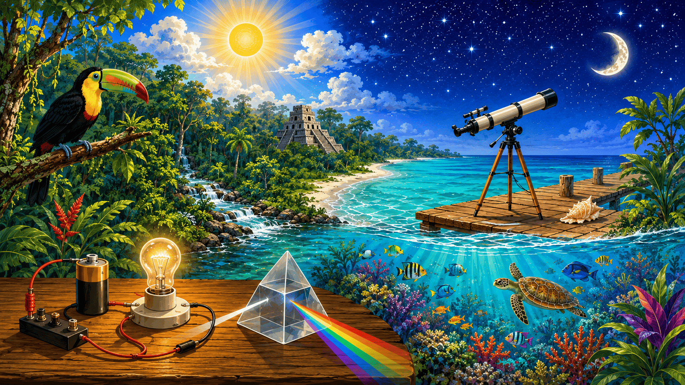

Standard 5 · Science & Technology
🔬 Science
Lessons, activities, assessments & digital labs for Standard 5

Welcome, Standard 5! Explore your Science & Technology materials here —
all 30 weeks across 4 teaching cycles, rooted in Belize's climate, animals, forces,
the cosmos, light, and living things. All quizzes and tests count toward your grade.
🌦️ Cycle 1 · Patterns in Our World · Weeks 1–8
Week 1 · SC 1.09
Technology & Climate Change — The Two-Way Connection
Discover how technology can cause climate change and also help us fight it
→
Week 2 · SC 1.10
Climate Change & Belize's Economy — Tourism & Agriculture
See how a changing climate touches Belize's farms, reefs and tourist towns
→
Week 3 · SC 1.11
Weather vs. Climate — Telling the Difference
Learn what makes today's weather different from Belize's long-term climate
→
Week 4 · SC 1.11
Reading Belize's Climate — Temperature & Rainfall Data
Read real temperature and rainfall charts like a climate scientist
→
Week 5 · SC 6.14
Seasonal Migration — Animals on the Move in Our Community
Track whale sharks, warblers and sea turtles as the dry and wet seasons change
→
Week 6 · SC 6.11
Animal Diversity Across Belize's Ecosystems
Meet the animals of the reef, rainforest, savanna and mangroves
→
Week 7 · SC 6.12
How Local Animals Survive — Physical, Behavioural & Physiological Adaptations
Sort the amazing adaptations that keep Belizean animals alive
→
Week 8 · SC 6.15
Protecting Belize's Animals — Human Impacts & How to Mitigate Them
Investigate human impacts and design ways to protect our wildlife
→
⚙️ Cycle 2 · Forces, Circuits & the Cosmos · Weeks 9–14
Week 9 · SC 2.10
Mechanical Systems — Simple Machines Working Together
Find the levers, wheels and pulleys hiding inside everyday machines
→
Week 10 · SC 2.11
Force & Movement — Making a Device Work
Push, pull and test how forces make devices move
→
Week 11 · SC 2.12
Building a Circuit (Part 1) — The Complete Loop
Build a working circuit and discover why the loop must be complete
→
Week 12 · SC 2.12
Building a Circuit (Part 2) — Adding & Explaining the Switch
Add a switch and explain how it opens and closes the loop
→
Week 13 · SC 3.11
Sorting the Solar System — Stars, Planets & Smaller Bodies
Sort stars, planets, moons, asteroids and meteors — and bust the shooting-star myth
→
Week 14 · SC 3.12
How the Solar System Formed — The Nebular Theory
Travel back billions of years to see how our solar system was born
→
🔭 Cycle 3 · Light, Sight & the Sky · Weeks 15–21
Week 15 · SC 3.13
The Sun-Moon-Earth System (Part 1) — Rotation, Revolution, Day & Year
Spin and orbit your way to understanding day, night and the year
→
Week 16 · SC 3.13
The Sun-Moon-Earth System (Part 2) — Why We Have Seasons
Discover how Earth's tilt gives the world its seasons
→
Week 17 · SC 3.14
Tools That Study the Universe
Explore telescopes and the tools scientists use to study the sky
→
Week 18 · SC 4.14
Light Sources — What Glows & What Only Reflects
Decide what truly makes light — and why the Moon only reflects it
→
Week 19 · SC 4.15
Light as Energy — Straight Lines & the Rainbow Spectrum
Prove light travels straight and split white light into a rainbow
→
Week 20 · SC 4.16
Reflection vs. Refraction (Part 1) — Running the Experiment
Bounce light off mirrors and bend it through water — the pencil only LOOKS bent
→
Week 21 · SC 4.16
Reflection vs. Refraction (Part 2) — Explaining the Images
Explain how mirrors and water make the images we see
→
🧠 Cycle 4 · How We Sense & Sort Life · Weeks 22–30
Week 22 · SC 4.17
The Eye & the Camera — How We Capture an Image
Compare your eye to a camera, part by part
→
Week 23 · SC 7.09
Human Organ Systems (Part 1) — Breathing, Digesting, Removing Waste
Tour the systems that keep your body fuelled and clean
→
Week 24 · SC 7.09
Human Organ Systems (Part 2) — Control & Defence
Meet the nervous system and the body's defence team
→
Week 25 · SC 7.09
Human Organ Systems (Part 3) — Support & Transport
See how bones, muscles and blood keep you moving
→
Week 26 · SC 7.10
Show How It Works — Demonstrating an Organ System
Demonstrate one organ system with a model, role-play or media
→
Week 27 · SC 6.13
Dichotomous Keys (Part 1) — Using a Key to Identify Animals
Use a step-by-step key to identify Belizean animals
→
Week 28 · SC 6.13
Dichotomous Keys (Part 2) — Building Your Own Key
Build your own key for the animals of your community
→
Week 29 · SC 5.11
Good Digital Citizenship — Safe, Responsible, Ethical
Learn the three pillars of being a good digital citizen
→
Week 30 · SC 5.12
Plagiarism — Giving Credit & Doing Honest Work
Give credit, quote fairly and do honest work online
→
Classwork & Projects · Standard 5 Science & Technology · Paper & classroom activities — all graded
🌦️ Cycle 1 Activities · Weeks 1–8
Climate & Technology Concept Map
In-class concept map with a word bank — connect technology and climate ideas
SC 1.09 · Wk 1⭐ Graded
Weather vs Climate Sort + Bar-Chart Read
Card sort and data-reading worksheet, working in Chromebook groups
SC 1.11 · Wk 3⭐ Graded
Seasonal Migration Field Log — Project
Observation log of local birds, insects and the whale shark, with a short share-out
SC 6.14 · Wk 5⭐ Graded
My Ecosystem & Its Animals — Project
Poster or labelled map of a Belizean ecosystem and the animals that live there
SC 6.11 · Wk 6⭐ Graded
Protect Our Diversity Mini-Campaign — Project
Your own mitigation message for Belize's wildlife — poster, skit or written piece
SC 6.15 · Wk 8⭐ Graded
⚙️ Cycle 2 Activities · Weeks 9–14
Simple Machines in a Bicycle
Labelling worksheet with a word bank — identify the machines working together
SC 2.10 · Wk 9⭐ Graded
Force & Movement Investigation Log
Hands-on station record sheet — push and pull to make a device work
SC 2.11 · Wk 10⭐ Graded
Mechanical System Model — Project
Group model built from simple machines — demonstrate and describe it
SC 2.10 · Wk 11⭐ Graded
Build a Working Circuit — Project
Group build with battery, bulb and switch — explain how it works
SC 2.12 · Wks 11–12⭐ Graded
Solar System Formation Explainer — Project
Group presentation explaining the Nebular Theory
SC 3.12 · Wk 14⭐ Graded
🔭 Cycle 3 Activities · Weeks 15–21
Seasons & Day-Length Diagram
Label-and-explain worksheet on rotation, revolution and Earth's tilt
SC 3.13 · Wk 15⭐ Graded
Emit vs Reflect Light Sort
Card sort with examples — what glows on its own vs what only reflects
SC 4.14 · Wk 18⭐ Graded
Tools That Study the Universe — Project
Group presentation on telescopes and the tools that explore the sky
SC 3.14 · Wk 17⭐ Graded
Light Travels Straight — Experiment Project
Group experiment with record sheet — straight-line travel and the spectrum
SC 4.15 · Wk 19⭐ Graded
Reflection / Refraction Investigation — Project
Group experiment and findings on how images form
SC 4.16 · Wk 20⭐ Graded
🧠 Cycle 4 Activities · Weeks 22–30
Eye vs Camera Compare Chart
Compare-and-label worksheet — lens and retina, lid and shutter
SC 4.17 · Wk 22⭐ Graded
Organ Systems Match-Up
Match each of the six organ systems to its job in the body
SC 7.09 · Wk 24⭐ Graded
Organ System Demonstration — Project
Group role-play, model or media — show one organ system working
SC 7.10 · Wk 26⭐ Graded
Build a Dichotomous Key — Project
Group key that identifies animals from your own community
SC 6.13 · Wk 28⭐ Graded
Good Digital Citizen Campaign — Project
Group presentation on honest, safe and kind work online
SC 5.11–5.12 · Wk 30⭐ Graded
🌦️ Cycle 1 Assessments · Weeks 1–8
Animal Adaptation Match-Up Quiz
Wk 7 · SC 6.12 · Physical, behavioural & physiological adaptations of Belizean animals · 10 questions · 31 marks
Quiz · ~15 min⭐ Graded
Unit Test 1 — Climate & Weather
End Wk 3 · SC 1.09–1.11 · Technology & climate, Belize's economy, weather vs climate · 15 questions · 56 marks
Test · Full Session⭐ Graded
Unit Test 2 — Animal Diversity
End Wk 6 · SC 6.11, 6.14 · Seasonal migration and animal diversity across Belize's ecosystems · 15 questions · 56 marks
Test · Full Session⭐ Graded
Cycle 1 Review Test
Wk 8 · All Cycle 1 outcomes · Cumulative — climate, weather, migration, diversity, adaptations & protection · 20 questions · 82 marks
Test · Full Session⭐ Graded
⚙️ Cycle 2 Assessments · Weeks 9–14
Solar System Sorting Quiz
Wk 13 · SC 3.11 · Stars, planets, moons, asteroids & meteors — and the shooting-star myth · 10 questions · 31 marks
Quiz · ~15 min⭐ Graded
Unit Test 1 — Mechanical & Electrical
End Wk 12 · SC 2.10–2.12 · Simple machines, force & movement, the complete circuit loop & switch · 15 questions · 56 marks
Test · Full Session⭐ Graded
Unit Test 2 — Space Science
End Wk 14 · SC 3.11–3.12 · Sorting the solar system and the Nebular Theory · 15 questions · 56 marks
Test · Full Session⭐ Graded
Cycle 2 Review Test
Wk 14 · All Cycle 2 outcomes · Cumulative — machines, forces, circuits & the cosmos · 20 questions · 83 marks
Test · Full Session⭐ Graded
🔭 Cycle 3 Assessments · Weeks 15–21
Reflection & Refraction Quiz
Wk 20 · SC 4.16 · Reflect = bounce off, refract = bend through — the pencil only looks bent · 10 questions · 31 marks
Quiz · ~15 min⭐ Graded
Unit Test 1 — Sun-Moon-Earth & Sky Tools
End Wk 17 · SC 3.13–3.14 · Rotation, revolution, seasons and the tools that study the universe · 15 questions · 56 marks
Test · Full Session⭐ Graded
Unit Test 2 — Light & Optics
End Wk 20 · SC 4.14–4.16 · Light sources, straight-line travel, the spectrum, reflection & refraction · 15 questions · 56 marks
Test · Full Session⭐ Graded
Cycle 3 Review Test
Wk 21 · All Cycle 3 outcomes · Cumulative — the sky, light and sight · 20 questions · 83 marks
Test · Full Session⭐ Graded
🧠 Cycle 4 Assessments · Weeks 22–30
Digital Citizenship Quiz
Wk 29 · SC 5.11 · Safe, responsible & ethical — the three pillars of digital citizenship · 10 questions · 31 marks
Quiz · ~15 min⭐ Graded
Unit Test 1 — Eye & Human Systems
End Wk 26 · SC 4.17, 7.09–7.10 · The eye & the camera, and the human organ systems · 15 questions · 56 marks
Test · Full Session⭐ Graded
Unit Test 2 — Classification & Digital Integrity
End Wk 30 · SC 6.13, 5.11–5.12 · Dichotomous keys, digital citizenship & plagiarism · 15 questions · 56 marks
Test · Full Session⭐ Graded
Year-End Review Test — How We Sense & Sort Life
Wk 30 · All Cycle 4 outcomes · Cumulative — before report cards · 20 questions · 83 marks
Test · Full Session⭐ Graded
Digital Labs · Standard 5 Science & Technology